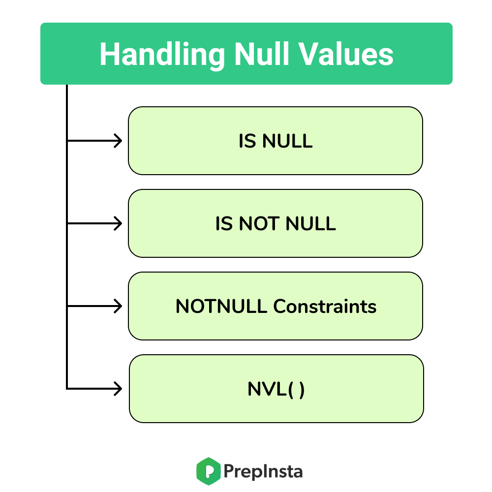

NULL VAlues in DBMS
In this article, we will learn about Null values in DBMS.
- Special value that is supported by SQL is called as null which is used to represent values of attributes that are unknown or do not apply for that particular row
- For example age of a particular student is not available in the age column of student table then it is represented as null but not as zero
- It is important to know that null values is always different from zero value
- A null value is used to represent the following different interpretations
- Value unknown (value exists but is not known)
- Value not available (exists but is purposely hidden)
- Attribute not applicable (undefined for that row)
- SQL provides special operators and functions to deal with data involving null values
